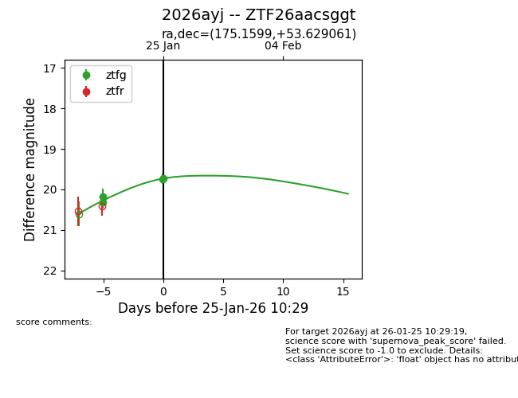
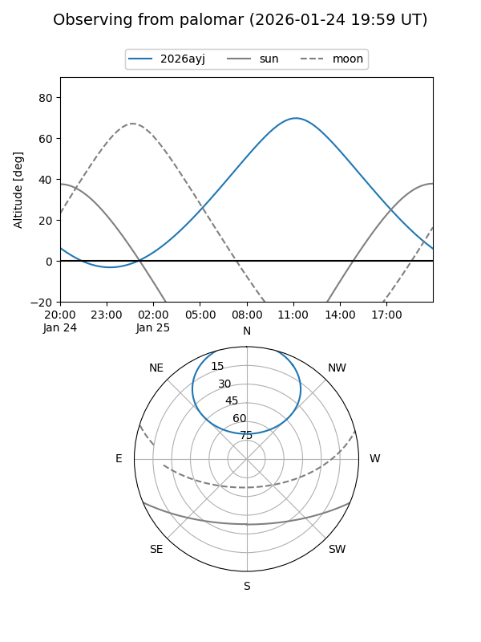
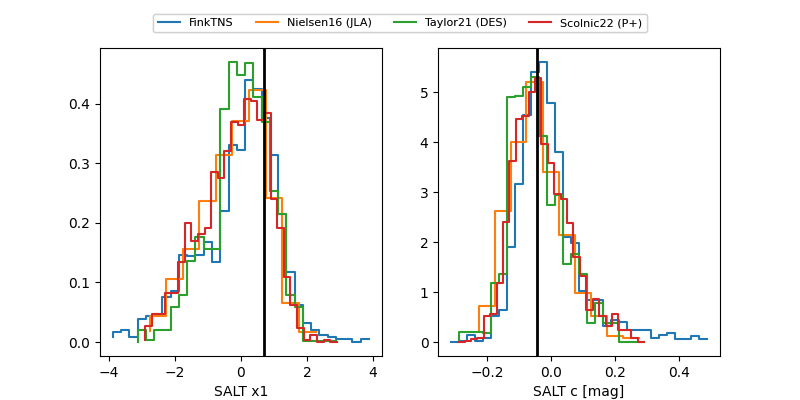

2026ayj
Target 2026ayj at 2026-01-25 10:31
Aliases and brokers:
FINK: link
Lasair: link
ALeRCE: link
TNS: link
YSE: link
alt names
ZTF26aacsggt (ztf,fink_ztf)
2026ayj (tns,yse)
Coordinates:
equatorial (ra, dec) = 175.1599,+53.62906
equatorial (HMS+DMS) = 11:40:38.37,+53:37:44.62
galactic (l, b) = (144.3759,+60.45228)
Flags:
Photometry:
last ztfg=19.72
4 ztfg detections
Lightcurve

Visibility


Additional plots
